Statistik 3
Lineare Modelle II
In Statistik 3 fassen wir zu Beginn den generellen Ablauf inferenzstatistischer Analysen in einem Flussdiagramm zusammen. Dann wird die ANCOVA als eine Technik vorgestellt, die eine ANOVA mit einer linearen Regression verbindet. Danach geht es um komplexere Versionen linearer Regressionen. Hier betrachten wir polynomiale Regressionen, die z. B. einen Test auf unimodale Beziehungen erlauben, indem man dieselbe Prädiktorvariable linear und quadriert einspeist. Multiple Regressionen versuchen dagegen, eine abhängige Variable durch zwei oder mehr verschieden Prädiktorvariablen zu erklären. Wir thematisieren verschiedene dabei auftretende Probleme und ihre Lösung, insbesondere den Umgang mit korrelierten Prädiktoren und das Aufspüren des besten unter mehreren möglichen statistischen Modellen. Hieran wird auch der informatian theoretician-Ansatz der Statistik und die multimodel inference eingeführt.
Lernziele
Genereller Ablauf einer statistischen Analyse
Das folgende Schema zeigt den generellen Ablauf einer statistischen Analyse, wie er für alle schon besprochenen und auch alle noch kommenden Verfahren gilt:

Ein zentrales Element ist die Modelldiagnostik, die wir in Statistik 2 am Ende behandelt haben. Leider wird sie oft vergessen! Basierend auf den Ergebnissen der Modelldiagnostik kann man entweder die Ergebnisse fertigstellen oder aber man muss zu den initialen Schritten zurückgehen. Möglicherweise war das gewählte statistische Verfahren schon nicht adäquat oder das Verfahren war in Ordnung, nur die Details der Spezifizierung (etwa Transformationen von Daten) müssen nachgebessert werden.
Covarianzanalyse (ANCOVA)
Wie wir schon bei “Lineare Modelle allgemein” in Statitik 2 gesehen haben, lassen sich metrische und kategoriale Variablen in einem einzigen linearen Modell kombinieren. Eine ANCOVA macht genau dieses, ist also im Prinzip eine Kombination aus ANOVA und linearer Regression. Stellen wir uns vor, wir hätten einen Datensatz von Körpergewichten von Kindern unterschiedlichen Alters (age: metrisch) und Geschlechts (sex: kategorial/binär, dargestellt als blau und rot). Eine ANCOVA testet nun, ob und wie sich das Gewicht in Abhängigkeit von beiden Faktoren verhält. Dabei gibt es im Prinzip sechs verschiedene Möglichkeiten/Ergebnisse, siehe Abbildung 3.1.
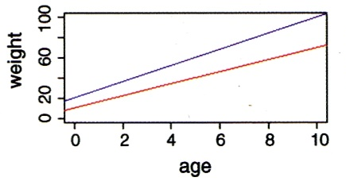
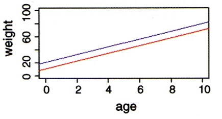
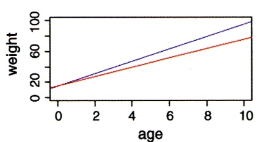
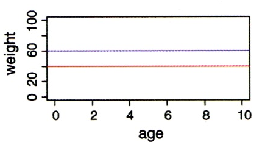
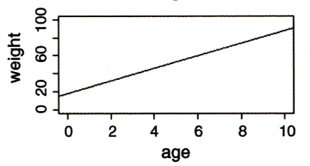
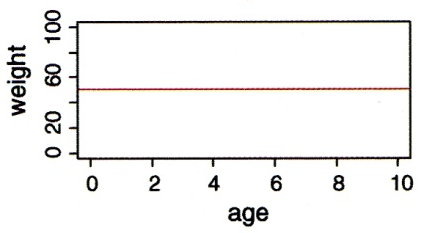
Wie andere lineare Modelle auch, kann man eine ANCOVA mittels aov oder mittels lm spezifizieren. Es ist zu beachten, dass hier die Reihenfolge der Variablen wichtig ist:
summary(aov(weight~age*sex))Im vollen Modell (full model, global model) wurden vier Parameter gefittet (2 Steigungen und 2 Achsenabschnitte). Das haben wir durch das “*”-Zeichen spezifiziert. Dieses sagt, dass nicht nur Alter und Geschlecht unabhängig voneinander einen (additiven) Effekt haben, sondern dass der Effekt des Alters je nach Geschlecht unterschiedlich sein könnte, also die Gewichtszunahme mit zunehmendem Alter je nach Geschlecht unterschiedlich sein kann. Jedoch sind oft nicht alle gefitteten Parameter bedeutsam. Es ist daher wichtig, das Modell so lange zu vereinfachen, bis nur noch bedeutsame Parameter übrig sind. Dann hat man das minimal adäquate Modell.
Für die Modellvereinfachung gibt es unterschiedliche Strategien (mehr dazu später bei den “Multiplen linearen Regressionen”). Man muss jedenfalls schrittweise vorgehen, d. h. immer nur einen Parameter löschen und dann das neue Modell anschauen. Von den Parametern welche nicht signifikant sind, könnte man z. B. zunächst den am wenigsten signifikanten löschen und dann das neue Model betrachten, usw.
Alternativ kann man auch ANOVAs zum Vergleich zweier unterschiedlich komplexer Modelle verwenden. Das klingt zunächst schräg, da wir bislang ANOVAs verwendet haben, um innerhalb eines Modelles zu sehen, ob etwa die durch die Steigung erklärte Varianz signifikant ist. Den gleichen Ansatz kann man aber auch verwenden, um zwei unterschiedlich komplexe Modelle miteinander zu vergleichen, um zu sehen, ob die durch das komplexere Modell zusätzlich erklärte Varianz signifikant ist. Wichtig ist dabei, dass das eine Modell im anderen geschachtelt ist:
anova(lm(weight ~ age + sex + age:sex), lm(weight~age+sex)) Das komplexere Modell ist jenes mit der Interaktion, das einfachere jenes ohne die Interaktion, da dort eine einheitliche Gewichtszunahme mit dem Alter angeommen wird. Wenn die ANOVA nun ein signifikantes Ergebnis liefert, heisst das, dass der zusätzliche Parameter des komplexeren Modells (die Interaktion Alter x Geschlecht) mehr erklärt als zufällig zu erwarten wäre und daher beibehalten werden sollte. Wenn die ANOVA ein nicht-signifkantes Ergebnis liefert, sollten wir uns für das einfachere Modell (jenes mit “+”) entscheiden.
Polynomische Regressionen
Eine quadratische Regression (Polynom 2. Ordnung) ist die einfachste Möglichkeit, eine sogenannte unimodale (humpshaped) Beziehung von abhängiger zur unabhängigen Variablen mathematisch abzubilden. Unimodal/humpshaped meint, dass die Kurve ein Maximum hat, d. h. die abhängige Variable für mittlere Werte der Prädiktorvariablen den höchsten Wert aufweist. Für viele Beziehungen sind solche unimodalen Kurvenverläufe theoretische vorhergesagt und/oder theoretisch nachgewiesen. In der Ökologie gilt das z. B. für die Beziehung des Artenreichtums zu so unterschiedlichen Faktoren wie Störungshäufigkeit (intermediate disturbance hypothesis, IDH), Boden-pH-Wert und Produktivität/Biomasse.
Das statistische Modell für eine quadratische Beziehung ist:
\[ y_i = \beta_0 + \beta_1 x_i + \beta_2 x_i^2 \]
In R wird eine quadratische Regression folgendermassen codiert:
summary(lm(f~e+I(e^2)))Coefficients:
Estimate Std. Error t value Pr(>|t|)
(Intercept) -2.239308 3.811746 -0.587 0.56777
e 1.330933 0.360105 3.696 0.00306 **
I(e^2) -0.031587 0.007504 -4.209 0.00121 **Wichtig ist, dass man den quadratischen Term im lm-Befehl nicht einfach als e^2 eingeben kann, sondern I(e\^2) schreiben muss. Eine signifikante unimodale Beziehung ist dann gegeben, wenn die Parameterschätzung für den quadratischen Term (also e^2) negativ ist – man hat eine nach unten offene Parabel. Ist der quadratische Term dagegen signifikant positiv, hat man eine nach oben offene Parabel, also eine u-förmige Beziehung (Minimum für die abhängige Variable bei intermediären Werten der Prädiktorvariablen).
Wichtig ist, dass man wie bei allen statistischen Modellen nachträglich die Modellvoraussetzungen prüft.
Im vorhergehenden Beispiel sah es mit einer einfachen linearen Regression so aus (Code, Ergebnisplot und Residualplots):
plot(f~e,xlim=c(0,40),ylim=c(0,20))
abline(lm(f~e),col="blue")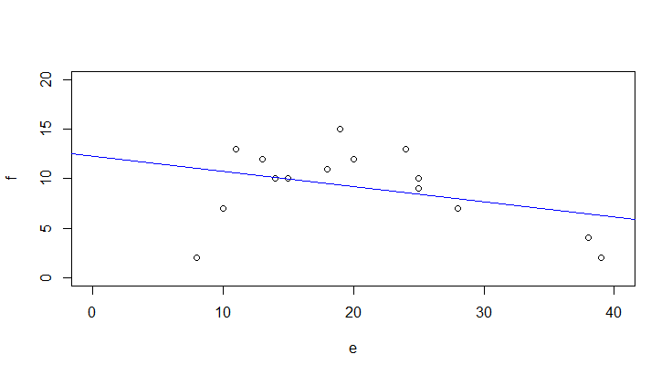
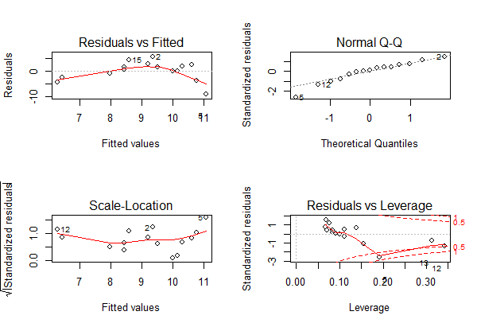
Man ahnt schon im Scatterplot mit der gefitteten einfachen linearen Regression, dass etwas mit dem Modell nicht stimmt, was durch die Bananenform im Residualplot links oben unterstrichen wird: die Beziehung ist evident nicht linear.
Nach Hinzufügen des quadratischen Terms sieht man schon im Scatterplot mit der gefitteten Funktion, dass es viel besser passt, aber erst recht in den Residualplots. Mit predict kann man jede Funktion plotten, die als Ergebnis einer Regressionsanalyse herauskommt. Im Prinzip zerlegt man die x-Achse in viele kleine Segmente und plottet dann jeweils Geraden zwischen zwei aufeinander folgenden vorhergesagten Punkten.
xv <- seq(0,40,0.1)
plot(f~e,xlim=c(0,40),ylim=c(0,20))
yv2 <- predict(lm.quad,list(e=xv))
lines(xv,yv2,col="red")
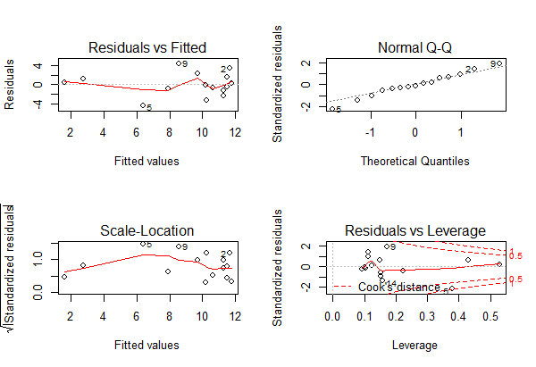
Bezüglich des statistischen Vorgehens ist zu beachten, dass man den quadratischen Term nur im Modell behalten sollte, wenn er signifikant ist (bei nur einem quadratischen Term der p-Wert aus summary, sonst ggf. mit anova testen oder AICc-Werte (siehe später) vergleichen). Dagegen muss der lineare Term (hier: e) dann beibehalten werden, wenn der quadratische Term signifikant ist, selbst wenn der lineare Term nicht signifkant ist. (Wenn beide nicht signifikant sind, fallen dagegen beide raus).
Wenn es theoretische Gründe gibt, kann man in gleicher Weise auch Polynome höherer Ordnung implementieren. Wichtig ist, im Hinterkopf zu behalten, dass eine polynomische Regression fast immer eine deutliche Simplifizierung der Realität darstellt. Sie ist ein probates und einfaches Mittel, um zu testen, ob die Beziehung signifikant unimodal ist. Dagegen ist sie problematisch als prädiktives Modell, da sie oft negative Werte für die abhängige Variable voraussagt, zumindest ausserhalb des gefitteten Bereichs. Negative Werte sind aber vielfach theoretisch unmöglich (z. B. Artenzahlen, Stoffkonzentrationen,…).
Multiple lineare Regressionen
Vorgehen
Analog zur mehrfaktoriellen ANOVA, sind multiple lineare Regressionen einfach lineare Regressionen mit mehreren Prädiktoren. Das statistische Modell lautet also folgendermassen (wobei x1 … xi metrische Variablen sind):
\[ y_i = \beta_0 + \beta_1 x_{1,i} + \beta_2 x_{2,i}+ (...) +\beta_j x_{j,i} \]
In R wird das wie folgt codiert:
model1 <- lm (y ~ x1 + x2 + x3, data = mydata)Möglich sind aber auch folgende komplexere Modelle:
model2 <- lm (y ~ x1 + x2 + I(x2\^2), data = mydata)
model3 <- lm (y ~ x1 + x2 + log10(x3), data = mydata)
model4 <- lm (y ~ x1 + x2 + x1:x2, data = mydata)Und für ein konkretes Beispiel (Abhängigkeit der Vogelabundanz in isolierten Waldinseln von verschiedenen Umweltvariablen (YR.ISOL = year since isolation, ALT = altitude, GRAZE = grazing):
model <- lm (ABUND ~ YR.ISOL + ALT + GRAZE, data=loyn)
summary(model)Coefficients:
Estimate Std. Error t value Pr(>|t|)
(Intercept) -73.58185 107.24995 -0.686 0.495712
YR.ISOL 0.05143 0.05393 0.954 0.344719
ALT 0.03285 0.02679 1.226 0.225618
GRAZE -4.01692 0.99881 -4.022 0.000188 ***Und wie immer schauen wir die Residualplots an, die eigentlich ziemlich gut aussehen:
par(mfrow=c(2,2))
plot(model)
Allerdings dürfen wir uns hier im Falle einer multiplen Regression noch nicht zufrieden zurücklehnen, sondern müssen uns zunächst noch zwei potenziellen Problemen annehmen: (1) Korrelation zwischen den Prädiktoren und (2) Overfitting.
Problem 1: Korrelation zwischen den Prädiktoren
Damit lm verlässliche Parameterschätzungen liefern kann, müssen die Prädiktoren (hinreichend) unabhängig (man spricht auch von: orthogonal) sein. Das muss man vor dem Fitten des Models testen und dann von Paaren hochkorrelierter Variablen jeweils eine ausschliessen.
Es gibt zwei gängige Testmöglichkeiten:
- Korrelationmatrix: nur Parameter mit einem Korrelationskoeffizenten von |r| < 0.7 werden beibehalten (manchmal findet man auch andere Schwellenwerte, etwa 0.6 oder 0.75: wie eigentlich alles in der Statistik, ist es keine Schwarz-weiss-Welt).
- Variance inflation factor (VIF): \(\text{VIF}_{i}\ = \frac{1}{1 - R_{i}^2}\) , mit \(R_i^2\) aus dem Modell Prädiktor i gegen alle übrigen Prädiktoren
Der VIF sagt uns, dass der Standardfehler (SE) des Prädiktors um \(\sqrt{VIF}\) grösser ist als im orthogonalen Fall. Oder in anderen Worten: je höher der VIF eines Prädiktors, desto problematischer ist seine Schätzung wegen der Korrelationen mit anderen Prädiktoren. Meist werden Variablen bis \(VIF = 5\), manchmal bis \(VIF = 10\) akzeptiert.
Die Berechnung der Korrelationsmatrix geht in R sehr einfach:
cor <- cor(loyn[, c("YR.ISOL", "ALT", "GRAZE")])
corDas Ergebnis ist allerdings unübersichtlich. Man kann es vereinfachen, indem man die Nachkommastellen reduziert und nur jene Werte darstellt, die über dem selbstgewählten Schwellenwert (hier 0.6) liegen.
cor <- round(cor, digits = 3)
cor[abs(cor)<0.6] <- NA
cor YR.ISOL ALT GRAZE
YR.ISOL 1.000 NA -0.636
ALT NA 1 NA
GRAZE -0.636 NA 1.000 Wenn man die Schwelle bei 0.6 ansetzt, müsste man also von den beiden Variablen GRAZE und YR.ISOL eine aus dem Modell entfernen, da sie zu stark negativ korreliert sind. Dabei sind drei Dinge wichtig:
- Statistisch gibt es kein klares Argument, welche von mehreren hoch-korrelierten Variablen man im vollen Modell streichen sollte (man könnte höchstens zusätzlich den VIF heranziehen). Inhaltlich macht es Sinn, diejenige Variable beizubehalten, die (a) besser interpretierbar ist oder (b) häufiger in vergleichbaren Studien gebraucht wurde.
- Man sollte im Methodenteil dokumentieren welche Variable(n) wegen positiver/negativer Korrelation mit welcher anderen aus dem vollen Modell gestrichen wurden.
- Bei der Interpretation der Ergebnisse stehen die beibehaltenen Variablen auch für die jeweils gestrichenen hochkorrelierten Variablen (zumindest zu einem erheblichen Teil).
Die Berechnung der VIF’s (Variance inflation factors) geht wie folgt:
library(car)
vif(model) YR.ISOL ALT GRAZE
1.679995 1.200372 1.904799 Hier sieht man nicht, welche Variable mit welcher anderen korrliert ist, man bekommt nur ein Gesamtranking. Da die VIF-Werte aller drei Variablen unter 5 sind, können alle beibehalten werden. Wenn mehrere Variablen einen VIF > 5 haben, muss man schrittweise immer die Variable mit dem höchsten VIF-Wert entfernen und die VIF-Werte dann neuberechnen. Sie ändern sich, wenn eine Variable wegfällt, da sie die Gesamt-Korrelationsstruktur des Datensatzes widerspiegeln.
Problem 2: Overfitting
Das Problem des Overfitting soll mit der folgenden Simulation veranschaulicht werden: zu einer Stichprobe von sechs Beobachtungen mit zwei numerischen Variablen werden schrittweise polynomische Modelle höher Ordnung gefittet.
Der Code dafür ist:
lm=lm(y~x)
xy <- seq(from=0,to=10,by=0.1)
yv <- predict(lm,list(x=xv))
lines(xv,yv)
lm2=lm(y~x+I(x\^2))
xy <- seq(from=0,to=10,by=0.1)
yv <- predict(lm2,list(x=xv))
lines(xv,yv)
[usw.]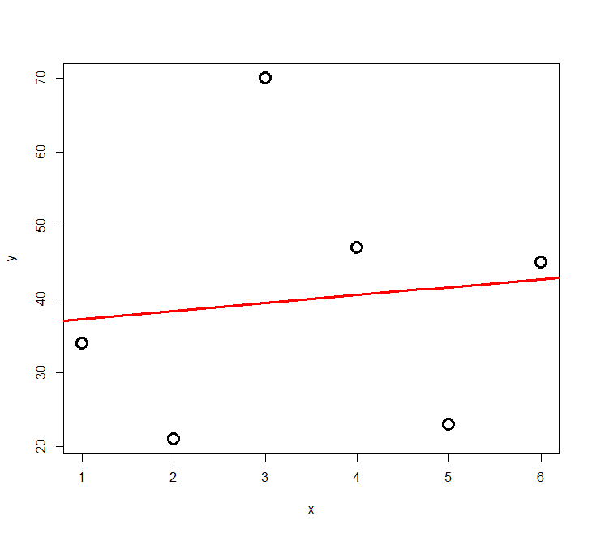

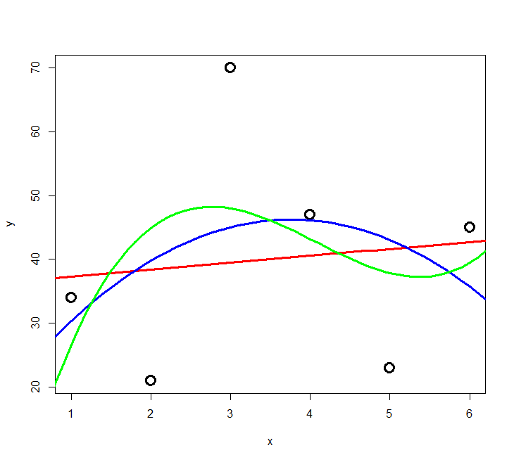
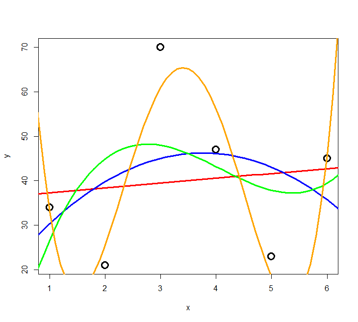
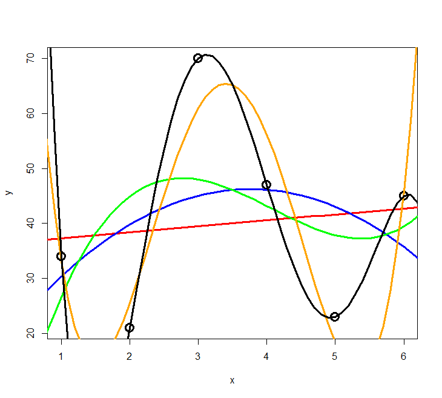
Das Ergebnis ist in Abbildung 3.2 und Abbildung 3.3 ersichtlich. Wir sehen, dass die erklärte Varianz kontinuierlich vom 2-Parameter-Modell (Achsenabschnitt und Steigung) zum 6-Parameter-Modell (Achsenabschnitt, Parameter für \(x\) bis \(x^5\)) zunimmt. Ein polynomisches Modell (\(n – 1\))-ter Ordnung erzielt immer 100% Anpassung and die Daten (\(R^2 = 1\)), wenn man \(n\) Beobachtungen hat. Aber ist das Modell deswegen auch besonders korrekt oder aussagekräftig? Das darf bezweifelt werden. Ein gutes Modell wäre ja eines, welches die zugrunde liegende Gesetzmässigkeit erkennt und daher auch für die Interpolation und Extrapolation geeignet ist.
Es zeigt sich, dass die gute Anpassung an die Daten (good fit, hier gemessen als R2) nur der eine Aspekt eines guten Modells ist. Zugleich sollte es möglichst einfach (parsimonous) sein, d. h. das Beobachtete mit möglichst wenigen Annahmen erklären. Es gilt das folgende Prinzip, das auf den mittelalterlichen Philosophen Willliam of Ockham (ca. 1288–1347 zurückgeht).

Modellvereinfachung
Nun stellt sich die Frage, wie wir vom vollen Modell (full model, global model) also jenem nach Entfernung hochkorrelierter Variablen zum “besten” Modell gelangt, das also eine bestmögliche Kombination von guter Anpassung an die Daten (Fit) und Parsimonie aufweist. Dieses anzustrebende statistische Modell wird auch minimal adäquates Modell (mininum adequate model) genannt.
Mögliche Kriterien für das “beste” Modell (minimum adequate model):
Höchster \(R^2_{adj.}= 1 - \frac{\text{SS}_\text{Resudial}/[n - (p + 1)]}{\text{SS}_\text{Total}/ (n - 1)}\) (vgl. \(R^2 = \frac{\text{SS}_\text{Regression}}{\text{SS}_\text{Total}} = 1-\frac{\text{SS}_\text{Regression}}{\text{SS}_\text{Total}}\))
Ist nicht wirklich zielführend, da der “Strafterm” (um den \(R^2\) reduziert wird) zu gering ist, um wirklich für Parsimonität zu sorgen.
Schrittweise Modellvereinfachung ausgehend vom “maximalen Modell”
Durch: Entfernen von (a) nicht-signifikanten Interaktionen, (b) nicht-signifikanten quadratischen Termen und schliesslich (c) nicht-signifkanten linearen Variablen.
Die schrittweise Modellvereinfachung kann wiederum auf drei verschiedene Weisen geschehen (die meist, aber nicht immer, die gleichen Ergebnisse liefern):
Schrittweise die am wenigsten signifkanten Terme entfernen, bis alle signifikant sind:
model1 <- lm (ABUND ~ YR.ISOL + ALT + GRAZE, data=loyn) summary(model1) model2 <- update(model1,~.-YR.ISOL) summary(model2)Mittels ANOVA schrittweise Modelle vergleichen und Terme hinzufügen, wenn signifikent, bzw. entfernen, wenn nicht
anova(model1,model2)Eine automatische Funktion zum schrittweisen Hinzufügen (forward selection) oder Löschen (backward selection) oder beidem verwenden (es gibt verschiedene Packages, bei Interesse bitte googlen).
Varianten a bis c sind im Prinzip OK, man muss sich aber bewusst sein, dass gerade bei vielen Variablen dieses schrittweise Vorgehen nicht zwingend das wirklich beste Modell findet, sondern man in einem “lokalen Optimum” landen kann (als Alternative siehe die dredge-Funktion unter “Information theoretician approach und multimodel inference”).
Varianzpartitionierung
Wenn man das minimal adäquate Modell gefunden hat, will man oft noch wissen, wie bedeutsam die einzelnen enthaltenen Variablen sind. Bedeutsamkeit/Relevanz haben wir weiter oben als \(R^2\) (erklärte Varianz) ausgedrückt. Wir können uns also anschauen, welche Anteile der erklärten Varianz auf welche Variablen zurückgehen. Da unsere Variablen (auch nach einem Korrelationstest und Ausschluss der besonders hoch korrelierten) nicht völlig orthogonal = unabhängig voneinander sind, verhalten sich die Varianzen nicht additiv. Vielmehr ist die erklärte Varianz in einem Modell mit zwei Variablen meist niedriger als die Summe der Varianzen der beiden Einzelmodelle. In einer Varianzpartitionierung wird die Varianz jeder Variablen daher in eine unabhängige (independent, I) und eine gemeinsame (joint, J) Komponente zerlegt:
library(relaimpo)
lm_1 <- lm(ABUND~YR.ISOL+ AREA + DIST + LDIST + GRAZE + ALT, data = loyn)
metrics <- calc.relimp(lm_1, type = c("lmg", "first", "last","betasq", "pratt"))
IJ <- cbind(I = metrics$lmg, J = metrics$first - metrics$lmg, Total = metrics$first)
IJ$IJ
I J Total
YR.ISOL 0.11827368 0.135095338 0.253369016
AREA 0.02359769 0.041923060 0.065520747
DIST 0.02566349 0.030085610 0.055749104
LDIST 0.01270789 -0.005112317 0.007595573
GRAZE 0.25879164 0.207030145 0.465821782
ALT 0.07275743 0.076112117 0.148869552Der grösste Teil der Varianz wird in diesem Sechs-Parameter-Modell daher durch die Variable „grazing“ erklärt. Wenn den Wert für GRAZE in der Spalte I in Relation zur Summe aller Werte in I setzt, also 0.2588 / 0.5119 erhält man 0.5056; mithin werden gut die Hälfte der erklärten Varianz durch „grazing“ erkärt.
Ergebnisdarstellung: partielle Regressionen und 3-D-Grafiken
Während sich die ermittelte Beziehung zwischen Antwort- und Prädiktor-Variable auch bei nichtlinearen Verläufen einfach mit predict visualisieren lässt, solange man nur eine Prädiktorvariable hat (selbst wenn sie in transformierter Weise im lm eingespeist wird), ist das bei mehreren Prädiktoren eine Herausforderung. Hier seien zwei Möglichkeiten kurz erwähnt:
Partielle Regressionen (sie zeigen wie die Beziehung aussähe, wenn all übrigen Faktoren konstant wären
library(car) avPlots(model, ask=F)
3D Response surfaces (es gibt Packages, um dasselbe auch für zwei Prädiktoren gleichzeitig zu machen; dies mach insbesondere Sinn, wenn auch quadratische Terme dabei sind; bei Interesse bitte googlen)
Information theoretician approach und multimodel inference
Vergleich mit frequentist statistics
Es gibt zwei grundlegende statistische Philosophien:
Frequentist statistics (“klassisiche” Statistik)
- Alles, was wir bislang gemacht haben
- Grundannahme: Es gibt ein einziges richtiges Modell der Wirklichkeit, dem man sich mit Irrtumswahrscheinlichkeitenannähern kann
- Nutzt p-Werte
Information theoretician approach
- Das, was wir in diesem Unterkapitel besprechen
- Grundannahme: Es kann ähnlich gute Modelle der Wirklichkeit geben, es gibt nicht das eine wahre Modell
- Nutzt keine p-Werte
- Dafür AIC (Akaike information criterion) oder BIC (Bayesian information criterion)
- Modellmittelung (model averaging) möglich
Masse der Modellgüte: AIC, BIC, AICc, \(\Delta_i\), Evidence ratios, Akaike weights
Die folgende Übersicht zeigt die wichtigsten Gütemasse im Vergleich. Wie schon besprochen, berücksichtigt \(R_\text{adj.}^2\) (nahezu) ausschliesslich den Fit (also die Anpassung der Kurve an die Daten). Dagegen berücksichtigen die Informationskriterien Fit und Komplexität (Komplexität meint das Gegenteil von Parsimonität). Bei AICc und BIC = SC fliesst schliesslich auch noch die Zahl der Datenpunkte ein:

Dabei gilt für AIC:
\(AIC = \text{n}(ln(RSS)) - \text{n} \times ln(n) + 2 (k+1)\) mit:
- RSS = Residual sum of squares
- k = Parameter des Models, inkl. Achsenabschnitt
- n = Anzahl der Beobachtungen/Replikate
AICc ist das AIC für “kleine” Stichprobengrössen (wobei “klein” bis zu 40 k reicht, also bei 2 Parametern wie in einer einfachen linearen Regression “gross” erst bei n = 81 Datenpunkten begänne). Deshalb und da sich für grosses n AICc asymptotisch AIC nähert, sollte man einfach immer AICc verwenden.
AIC und BIC entstammen wiederum etwas unterschiedlichen Philosophien. Auf die Unterschiede gehen wir nicht im Detail ein. Die Ergebnisse basierend auf BIC und AICc sind in dem Kontext wie wir sie hier vorstellen (BIC mit nicht-informativen priors) nahezu gleich. BIC wird relevant, wenn man informative priors verwenden kann (aber das sprengt den Kurs).
Es gilt folgendes für AIC, AICc und BIC analog:
Der absolute Wert eines Informationskriteriums ist belanglos (ob also -1000, 0.1 oder +1’000’000). Informationskriterien können nur im Vergleich zweier Modelle für die gleichen Daten sinnvoll angewandt werden. Dann ist das Modell mit dem niedrigeren Wert das bessere hinsichtlich Fit und Komplexität.
\(\Delta_i = \text{AIC}_i - \text{AIC}_{\text{min}}\)
\(\Delta_i\) ist die Differenz im AIC (oder eines anderen Informationskriteriums) zwischen einem bestimmten Modell i und dem jeweils besten Modell im Vergleich. Dabei wird meist die folgende Konvention verfolgt:
- wenn \(\Delta_i \leq 2\): Modelle sind statistisch “gleichwertig”
- wenn \(\Delta_i > 4\): Modell mit dem höheren Wert ist statistisch nicht relevant
Likelihood von Modell \(g_i\) für die Daten (je grösser, desto besser): \(L = exp(-\frac{1}{2}\Delta_i)\)
Evidence ratio: (etwa: wie vielfach besser ist das beste Modell verglichen mit Modell i? – je grösser, desto besser) \(ER = \frac{L_{best}}{L_i}\)
Akaike weights: Normalisierte Likelihoods über alle verglichenen Modelle: \(W_i = \frac{exp(-\frac{1}{2}\Delta_i)}{\sum{[exp(-\frac{1}{2}\Delta_j]}}\)
\(\Delta_i\), Likelihood, ER und Akaike weights stehen alle für die gleiche Information (statistische Eignung bezüglich Fit und Komplexität) in verschiedenen Darstellungen/Transformationen. Als besonders praktisch erweisen sich die Akaike weights \(W_i\). Nach ihrer Definition summieren sich die Akaike weights aller verglichenen Modelle zu 1. \(W_i\) kann daher als die Wahrscheinlichkeit interpretiert werden, dass Modell \(i\) unter den verglichenen Modellen das beste ist.
Da AIC und p-Werte aus verschiedenen und nicht kompatiblen statistischen Philosophien stammen, sollte man in einer mit Informationskriterien arbeitenden Studie nicht zusätzlich auch noch p-Werte angeben. \(R^2\)-Werte sind dagegen in beiden “statistischen Welten” sinnvoll und wichtig.
Multimodel inference
Der Charme der Informationskriterien ist, dass sie sich besonders gut dann eignen, wenn man viele verschiedene Modelle vergleicht, etwa weil man ein grössere Zahl von potenziellen Prädiktoren erhoben hat, mit denen man eine abhängige Variable erklären will, etwas in einer multiplen Regression oder einer mehrfaktoriellen ANOVA oder einem sonstigen komplexen Modell. Denn die Anzahl aller möglichen Modellen steigt exponetiell mit der Anzahl berücksichtigten Terme. Wenn man sich ein globales Modell mit n Termen (Achsenabschnitt und n – 1 Steigungen (estimates) für Prädiktorvariablen, transformierte Prädiktorvariablen oder Interaktionen zwischen Prädiktorvariablen) vorstellt, beinhaltet das 2n Einzelmodelle für alle möglichen Kombinationen der Terme von 0 bis n Prädiktoren. Bei n = 10 wären das bereits 1024 verschiedene Modelle. Diese alle zu berechnen ist ein grosser Aufwand, weswegen man früher versucht hat, in solchen Fällen das minimal adäquate Modell in einer weniger rechenaufwändigen Weise zu finden, indem man eine stepwise forward/backward variable selection durchgeführt hat (siehe Kapitel “Modellvereinfachung” oben). Heute ist das Ausrechnen von 1000 Modellen selbst auf einem einfachen Notebook nur noch eine Sache von Sekunden, d. h. man kann seine Entscheidung effektiv auf dem Vergleich aller mit den verfügbaren Variablen möglichen Teilmodelle gründen. Die dredge-Funktion im MuMIn-Paket macht genau dieses. Bis etwa 15 Terme (d. h. 32768 zu vergleichende Modelle) funktioniert dredge auch auf einfachen Notebooks noch im Bereich weniger Minuten (aber man muss schon merklich auf das Ergebnis warten); jeder weitere Term führt aber zu einer Verdopplung der Rechenzeit.
Schauen wir uns das anhand des schon bekannten loyn-Datensatzes (Vogelvorkommen in Waldfragmenten) an:
library(MuMIn)
global.model <- lm (ABUND ~ YR.ISOL + ALT + GRAZE, data=loyn)
options(na.action="na.fail")
allmodels <- dredge(global.model)
allmodelsModel selection table
(Int) ALT GRA YR.ISO df logLik AICc delta weight
3 34.370 -4.981 3 -194.315 395.1 0.00 0.407
4 28.560 0.03191 -4.597 4 -193.573 395.9 0.84 0.267
7 -62.750 -4.440 0.04898 4 -193.886 396.6 1.46 0.196
8 -73.580 0.03285 -4.017 0.05143 5 -193.087 397.4 2.28 0.130
6 -348.500 0.07006 0.18350 4 -200.670 410.1 15.03 0.000
5 -392.300 0.21120 3 -203.690 413.8 18.75 0.000
2 5.598 0.09515 3 -207.358 421.2 26.09 0.000
1 19.510 2 -211.871 428.0 32.88 0.000Wie man sieht, wurde hier zunächst ein globales Modell mit den drei Prädiktoren YR.ISOL, ALT und GRAZE erstellt. Im nächsten Schritt wurde dann mit der dredge-Funktion dann ein Objekt allmodels generiert, das die 23 = 8 möglichen Teilmodelle enthält. In der Tabellenausgabe sieht man, dass unter diesen Modell Nr. 3, das nur einen Achsenabschnitt und GRAZE enthält mit einem Akaike weight von 0.407 das beste Modell ist. Allerdings unterscheiden sich die Modelle Nr. 4 und 7 um weniger als 2 AICc-Einheiten, sind also als praktisch gleichwertig zu betrachten. Sie haben daher auch nur etwas geringere Akaike weights von 0.267 und 0.196.
Anders als bei der frequentist statistician-Ansatz geht es nicht darum, ein einziges bestes Modell zu finden, sondern eine Aussage über ein Ensemble von plausiblen Modellen zu treffen. Es gibt hier zwei gängige Ansätze um die Ergebnisse zu synthetisieren: Variable importance und Model averaging.
Variable importance steht dabei für die Summe der Akaike weights (\(W_i\)) aller Teilmodelle, die eine bestimmte Variable enthalten. Da \(W_i\) selbst von 0 bis 1 reicht, gilt dies auch für die Variable importance. Eine Variable importance von 1 bedeutet dabei, dass alle plausiblen Modelle die entsprechende Variable beinhalten. Mithin sagt uns die Variable importance wie bedeutsam eine bestimmte Variable innerhalb der Menge der verglichenen Teilmodelle ist. Aber Achtung: Variable importance hat nichts mit Signifikanz oder p-Werten zu tun! Es gibt keine generelle Konvention, ab welcher Variable importance eine Variable als bedeutsam angesehen wird, aber häufig wird 50 % als Schwelle verwendet. In R geht das folgendermassen:
importance(allmodels) GRAZE ALT YR.ISOL
Importance: 1.00 0.40 0.33
N containing models: 4 4 4 Während logischerweise jede der drei Variablen in jeweils vier Teilmodellen vorkommt, unterscheiden sie sich erheblich in der Variable importance. Alle nach der obigen Tabelle relevanten Modelle (\(\Delta i < 4\)) enthalten GRAZE, während die beiden anderen nur in je zwei Modellen vorkommen. Entsprechend ist die Variable importance von GRAZE nahe 1, während sie von ALT und YR.ISOL unter 0.5 liegt.
Model averaging ist eine andere interessante Möglichkeit des Information theoretician-Ansatzes und der Multimodel inference. Hier werden quasi alle möglichen Modelle (oder alle Modelle mit einem \(\Delta i\) unter einem bestimmten Schwellenwert) zu einem gemittelten Modell zusammengefasst, gewichtet nach ihrem Wi-Wert. Am Ende bekommt man eine einzige gemittelte Funktion, deren Funktionsparameter man interpretieren und die man plotten kann.
avgmodel <- model.avg(get.models(dredge(model,rank="AICc"),subset=TRUE))
summary(avgmodel)full average)
Estimate Std. Error Adjusted SE z value Pr(>|z|)
(Intercept) -0.29874 77.23966 78.39113 0.004 0.997
GRAZE -4.64605 0.89257 0.91048 5.103 3e-07 ***
ALT 0.01282 0.02311 0.02340 0.548 0.584
YR.ISOL 0.01631 0.03883 0.03941 0.414 0.679 Man beachte, dass der Output auch einen p-Wert enthält, obwohl dieser im AIC-Kontext nicht sinnvoll ist.
Zusammenfassung
Weiterführende Literatur
- Crawley, M.J. 2015. Statistics – An introduction using R. 2nd ed. John Wiley & Sons, Chichester, UK: 339 pp.
- Chapter 7: Regression (pp. 140–141)
- Chapter 9: Analysis of Covariance
- Chapter 10: Multiple Regression
- Chapter 12: Other Response Variables (p. 233 [AIC])
- Burnham, K.P. & Anderson, D.R. 2002. Model selection and multimodel inference – a practical information-theoretic approach. 2nd ed. Springer, New York, US: 488 pp.
- Johnson, J.B. & Omland, K.S. 2004. Model selection in ecology and evolution. Trends in Ecology and Evolution 19: 101–108.
- Logan, M. 2010. Biostatistical design and analysis using R. A practical guide. Wiley-Blackwell, Oxford, UK: 546 pp., v.a.
- pp. 208-253 (Multiple und nicht-lineare Regressionen)
- Quinn, P.Q. & Keough, M.J. 2002. Experimental design and data analysis for biologists. Cambridge University Press, Cambridge, UK: 537 pp.